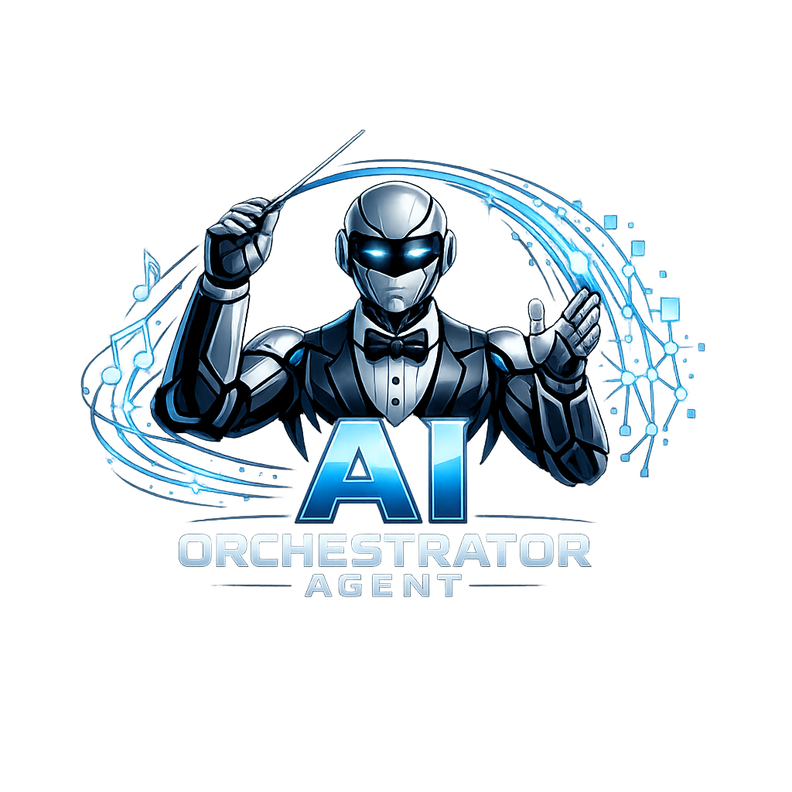

Business Process Automation
Identify repetitive manual tasks and replace them with reliable automated pipelines. Python and JavaScript scripts that run on schedule, on trigger, or on demand.
Build smarter operations with AI implementation and solid API architecture. Automation systems, process workflows, and custom internal tools that reduce manual work, eliminate bottlenecks, and improve operational reliability.
Every automation engagement starts with understanding how your current workflow breaks down — then building the right system to fix it, not over-engineer it.
Identify repetitive manual tasks and replace them with reliable automated pipelines. Python and JavaScript scripts that run on schedule, on trigger, or on demand.
Connect the platforms you already use. REST APIs, webhooks, OAuth flows, and data pipelines that sync your tools — no more copy-paste between systems.
Purpose-built dashboards, admin panels, batch processors, and command-line tools designed for your team's exact workflow — not a generic SaaS subscription.
Integrate OpenAI, Claude, or other AI APIs into your existing systems. Text generation, classification, summarization, image processing — scoped to real use cases.
Extract, transform, and load data between systems. Automated reporting, CSV/JSON pipelines, scheduled sync tasks, and data normalization workflows.
Event-driven automation triggered by external actions — payment confirmations, form submissions, GitHub pushes, Discord events, or custom triggers.
Apps and pipelines built around AI models, automation workflows, and multi-step orchestration. These range from fully shipped desktop tools to internal production pipelines.
Automation System
Multi-stage orchestration system for automated video content production. Topic sourcing, script generation, narration synthesis, clip compilation — fully automated pipeline.
AI Processing Pipeline
Shipped Windows application that runs short-form video through a multi-stage AI enhancement pipeline — upscaling, frame interpolation, and quality processing in a single automated pass.

Desktop Automation Tool
Batch video processing and compilation tool. Automates clip selection, ordering, FFmpeg processing, and output — reducing hours of manual editing to a single run.

Workflow Architecture
Custom orchestration layers that chain multiple AI models, external APIs, and data sources into reliable, error-handled pipelines with logging and retry logic.
Common workflows that teams handle manually — and shouldn't have to.
Scheduled data pulls, formatting, and delivery — weekly reports that write and send themselves to the right person.
Keep product data, customer records, or inventory consistent across systems without manual export/import cycles.
Batch generate product descriptions, summaries, or metadata using AI APIs with proper prompting and output validation.
Webhook-driven alerts to Slack, Discord, or email when specific conditions are met — without polling or manual checking.
Batch rename, convert, compress, or parse large volumes of files or records — operations that would take hours done in seconds.
Post-purchase automation: order confirmation triggers, fulfillment status updates, inventory decrements, and customer notifications.
Automation that actually runs in production requires a scoped approach — not a fire-and-forget script.
We map out the manual steps, identify bottlenecks, and agree on what "done" looks like before writing code.
Architecture decision: script, service, scheduled job, or triggered webhook. APIs and data flow documented before development.
Python or JavaScript automation built with error handling, logging, and replay capability built in — not bolted on after.
Full end-to-end test with real data in a safe environment. Edge cases validated before production deployment.
Live deployment, monitoring setup, and full documentation so you can understand, run, and modify the system yourself.
If your team is spending hours on something that could run itself, let's scope it out. A 20-minute call is enough to figure out if automation makes sense for your situation — and what it would take.